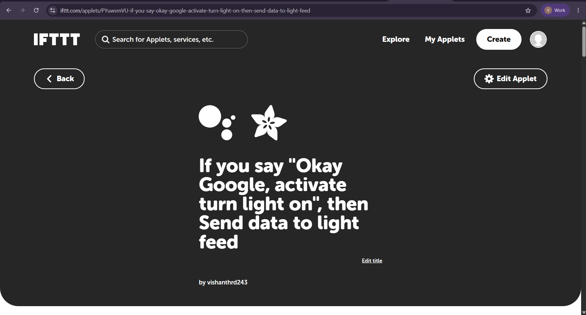
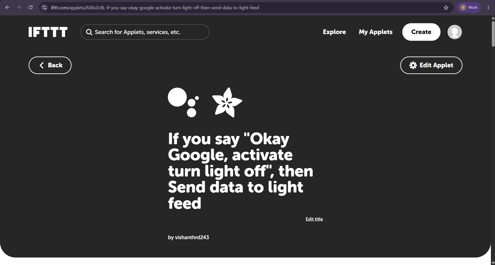
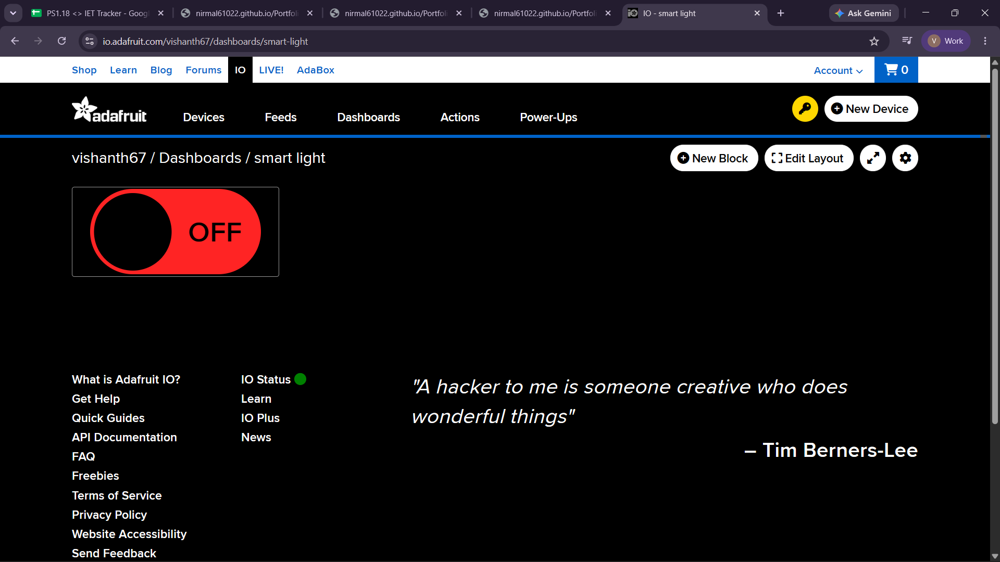

IoT Project · Task 3
IFTTT + Adafruit IO IoT Automation
Built a cloud automation flow in which Google Assistant voice commands trigger IFTTT Applets that send ON/OFF values to an Adafruit IO feed. An ESP32 subscribes to the feed over MQTT and controls an LED through GPIO 2.
Project demonstration
The complete recording is provided with the project files.
Overview and system flow
This project links an external voice trigger to a physical IoT output. The IFTTT Applets shown use Google Assistant phrases to switch the light on or off, then send the matching value to the Adafruit IO light feed. The ESP32 receives the feed value through MQTT and changes the LED state.
IFTTT configuration evidence



Hardware and software
Hardware
- ESP32 development board
- LED
- Current-limiting resistor
- Breadboard and jumper wires
- USB cable
- Wi-Fi network with internet access
Software and cloud services
- Arduino IDE and ESP32 board package
- Adafruit MQTT libraries
- IFTTT with Google Assistant service
- Adafruit IO and the
lightfeed - MQTT communication
- Browser for dashboard and configuration
The documented circuit connects GPIO 2 through a resistor and LED to GND. The ESP32 sets GPIO 2 HIGH for ON and LOW for OFF.
Trigger, action, and feed
Voice triggers
- “Okay Google, activate turn light on”
- “Okay Google, activate turn light off”
IFTTT action
- Send data to the Adafruit IO
lightfeed - Publish the matching
ONorOFFvalue - ESP32 subscribes to
username/feeds/light
The screenshots identify the IFTTT actions and feed as light; the complete write-up and sample sketch use that same feed name.
How it works
- Say one of the configured Google Assistant phrases.
- IFTTT detects the trigger and runs its matching Applet.
- The Applet sends
ONorOFFto Adafruit IO’slightfeed. - The ESP32 receives the new feed value through its MQTT subscription.
- The sketch compares the command and sets GPIO 2 HIGH or LOW.
- The LED changes state; the Serial Monitor displays the received command.
Result and learning
The project demonstrates a cloud-connected automation chain from a voice trigger to a physical LED. It combines an automation service, an IoT cloud feed, MQTT messaging, and ESP32 GPIO control.
It provided practice with trigger/action workflows, Adafruit IO feed configuration, MQTT subscriptions, Wi-Fi and internet connectivity, and testing each stage of a multi-service IoT system.
Complete project write-up
Expand to read all sections from the project notes
IoT Session — Task 3: IFTTT + Adafruit IO IoT Automation
1. Overview
Objective
The main objective of this task is to create an IoT automation system using ESP32, IFTTT, Adafruit IO, and MQTT. The system shows how an external event or trigger can automatically perform an action on an IoT device without requiring manual control.
Problem Being Addressed
In a simple IoT system, the user normally controls the device manually through an application or dashboard. Automation improves this by allowing the system to react automatically whenever a predefined event takes place.
For example, an external trigger can send a command to an IoT cloud platform, which then communicates with the ESP32 and controls an actuator such as an LED or relay.
Project Summary
In this project, IFTTT works as the automation platform, while Adafruit IO is used as the IoT cloud platform. An IFTTT Applet detects a predefined trigger and performs an action that updates an Adafruit IO feed. The ESP32 monitors this feed through MQTT and responds to the received value by changing the state of the connected LED.
The complete system follows this sequence:
Trigger → IFTTT → Adafruit IO → MQTT → ESP32 → LED
2. Concepts
IoT Automation
IoT automation refers to allowing connected devices to automatically perform actions according to predefined events or conditions.
Instead of manually operating a device, an external event can start the complete process.
For example:
Trigger occurs ↓ Automation platform processes trigger ↓ Cloud IoT platform receives command ↓ ESP32 receives command ↓ Device performs action
This type of automation is useful in smart homes, industrial monitoring, energy management, security systems, and many other IoT applications.
IFTTT
IFTTT stands for If This Then That.
It is an automation service that connects different online services and allows an action to happen automatically when a particular trigger occurs.
The basic concept is:
IF THIS happens ↓ THEN THAT action is performed
An automation created using IFTTT is called an Applet.
Trigger → Action
An IFTTT Applet mainly contains two parts: a trigger and an action.
Trigger
The trigger is the event that starts the automation process.
Examples include:
- A button or webhook event
- A particular application event
- A scheduled event
- A value received from a connected service
Action
The action is the operation carried out after the trigger occurs.
In this project, the action updates the Adafruit IO feed.
Trigger ↓ IFTTT Applet ↓ Action ↓ Adafruit IO Feed
3. Role of Adafruit IO
Adafruit IO provides the cloud communication layer between the automation workflow and the ESP32.
The Adafruit IO feed stores the command produced by the automation process.
For example:
IFTTT Action ↓ Adafruit IO ↓ light feed ↓ MQTT ↓ ESP32
The ESP32 subscribes to the feed and continuously checks for new MQTT messages.
When the feed receives ON, the ESP32 switches the LED ON.
When the feed receives OFF, the ESP32 switches the LED OFF.
4. System Design
Overall Architecture
The complete automation setup can be represented as:
TRIGGER ↓ IFTTT Applet ↓ ACTION ↓ Adafruit IO Feed ↓ MQTT ↓ ESP32 Subscriber ↓ GPIO 2 ↓ LED
Data Flow
- A predefined trigger takes place.
- IFTTT detects the trigger.
- The IFTTT Applet executes its configured action.
- The action sends the required value to Adafruit IO.
- Adafruit IO updates the selected feed.
- The ESP32 receives the updated value through MQTT.
- The ESP32 processes the received command.
- The GPIO output is changed.
- The LED performs the required operation.
5. Hardware & Software
Hardware Components
| Component | Purpose |
|---|---|
| ESP32 Development Board | Main IoT controller |
| LED | Output/actuator |
| Resistor | Limits LED current |
| Breadboard | Circuit prototyping |
| Jumper Wires | Electrical connections |
| USB Cable | Programming and power |
| Wi-Fi Network | Internet connectivity |
Software and Cloud Platforms
| Platform / Software | Purpose |
|---|---|
| Arduino IDE | ESP32 programming |
| ESP32 Board Package | ESP32 development support |
| IFTTT | Automation and trigger/action workflow |
| Adafruit IO | IoT cloud platform |
| MQTT | Cloud-to-device communication |
| Adafruit MQTT Library | MQTT communication |
| Web Browser | Dashboard and configuration |
6. IFTTT Applet Configuration
Applet Structure
The IFTTT Applet was created using a trigger → action workflow.
Trigger
The selected trigger works as the starting event for the automation.
Trigger used:
Google Assistant voice command: “Okay Google, activate turn light on” or “Okay Google, activate turn light off”.
Examples:
- Webhooks event
- Button event
- Scheduled event
- Application event
Action
After the trigger occurs, IFTTT performs the configured action.
Action performed:
Send data to the Adafruit IO light feed, with the matching ON or OFF value.
In this IoT workflow, the action sends a command to Adafruit IO so that the corresponding feed value can be updated.
7. How the Trigger Reaches the IoT System
The trigger does not communicate with the ESP32 directly.
Instead, it passes through several cloud services before reaching the physical device.
Communication Sequence
External Trigger ↓ IFTTT ↓ IFTTT Action ↓ Adafruit IO ↓ MQTT Feed ↓ ESP32 ↓ GPIO ↓ LED
This architecture keeps the automation layer separate from the device-control layer.
IFTTT is responsible for the automation logic, while Adafruit IO manages the IoT data communication.
8. Adafruit IO Feed
The Adafruit IO feed used for this project is:
light
The feed receives the value generated by the automation workflow.
Example Values
ON
OFF
When the feed receives:
ON
the ESP32 turns the LED ON.
When the feed receives:
OFF
the ESP32 turns the LED OFF.
9. Wiring / Setup
The physical circuit uses an ESP32 GPIO pin to operate the LED.
Pin Configuration
| ESP32 Pin | Component | Function |
|---|---|---|
| GPIO 2 | LED | Digital output |
| GND | LED circuit | Ground |
GPIO 2 → Resistor → LED → GND
Circuit
ESP32 GPIO 2 ↓ Resistor ↓ LED ↓ GND
The ESP32 changes the GPIO output according to the command received from Adafruit IO.
10. ESP32 Implementation
The ESP32 program first connects to Wi-Fi and then subscribes to the Adafruit IO MQTT feed.
Complete ESP32 Source Code
#include <WiFi.h>
#include "Adafruit_MQTT.h"
#include "Adafruit_MQTT_Client.h"
#define WIFI_SSID "YOUR_WIFI_NAME"
#define WIFI_PASSWORD "YOUR_WIFI_PASSWORD"
#define AIO_SERVER "io.adafruit.com"
#define AIO_SERVERPORT 1883
#define AIO_USERNAME "YOUR_ADAFRUIT_USERNAME"
#define AIO_KEY "YOUR_ADAFRUIT_IO_KEY"
#define LED_PIN 2
WiFiClient client;
Adafruit_MQTT_Client mqtt(
&client,
AIO_SERVER,
AIO_SERVERPORT,
AIO_USERNAME,
AIO_KEY
);
Adafruit_MQTT_Subscribe bulbControl =
Adafruit_MQTT_Subscribe(
&mqtt,
AIO_USERNAME "/feeds/light"
);
void setup() {
Serial.begin(115200);
pinMode(LED_PIN, OUTPUT);
digitalWrite(LED_PIN, LOW);
WiFi.begin(WIFI_SSID, WIFI_PASSWORD);
Serial.print("Connecting to Wi-Fi");
while (WiFi.status() != WL_CONNECTED) {
delay(500);
Serial.print(".");
}
Serial.println();
Serial.println("Wi-Fi connected");
Serial.print("IP Address: ");
Serial.println(WiFi.localIP());
mqtt.subscribe(&bulbControl);
}
void connectMQTT() {
int8_t ret;
if (mqtt.connected()) {
return;
}
Serial.print("Connecting to Adafruit IO...");
while ((ret = mqtt.connect()) != 0) {
Serial.println(mqtt.connectErrorString(ret));
mqtt.disconnect();
delay(5000);
}
Serial.println("Connected to Adafruit IO");
}
void loop() {
connectMQTT();
mqtt.processPackets(1000);
Adafruit_MQTT_Subscribe *subscription;
while ((subscription = mqtt.readSubscription(1000))) {
if (subscription == &bulbControl) {
String command =
(char *)bulbControl.lastread;
Serial.print("Received: ");
Serial.println(command);
if (command == "ON") {
digitalWrite(LED_PIN, HIGH);
Serial.println("LED ON");
}
if (command == "OFF") {
digitalWrite(LED_PIN, LOW);
Serial.println("LED OFF");
}
}
}
}11. Important Code Sections
Wi-Fi Connection
WiFi.begin(WIFI_SSID, WIFI_PASSWORD);This command connects the ESP32 to the configured Wi-Fi network.
Internet connectivity is necessary because the ESP32 communicates with the cloud-based Adafruit IO MQTT broker.
MQTT Feed Subscription
mqtt.subscribe(&bulbControl);This makes the ESP32 subscribe to the light feed.
The ESP32 can then receive values published to that feed.
Receiving the Command
String command =
(char *)bulbControl.lastread;This statement reads the value received from the MQTT feed.
The received value is then compared with the expected commands.
Performing the Action
if (command == "ON") {
digitalWrite(LED_PIN, HIGH);
}The LED turns ON whenever the received command is ON.
if (command == "OFF") {
digitalWrite(LED_PIN, LOW);
}The LED turns OFF whenever the received command is OFF.
12. Complete Automation Example
The complete automation process can be represented as:
TRIGGER ↓ IFTTT detects event ↓ IFTTT Applet runs ↓ Action sends command ↓ Adafruit IO updates light ↓ MQTT message is delivered ↓ ESP32 receives command ↓ ESP32 processes ON/OFF ↓ GPIO 2 changes state ↓ LED responds
This shows how an external event can be converted into a physical action using cloud-based IoT automation.
13. Evidence
IFTTT Configuration
Add screenshots showing:
- Screenshot 1: IFTTT account/workspace
- Screenshot 2: Trigger configuration
- Screenshot 3: Action configuration
- Screenshot 4: Completed IFTTT Applet
Adafruit IO Evidence
Add screenshots showing:
- Screenshot 5: Adafruit IO dashboard
- Screenshot 6: light feed
- Screenshot 7: Feed value after automation trigger
Hardware Evidence
Add photographs showing:
- ESP32 board
- LED circuit
- Breadboard
- USB connection
- Complete working setup
- Photo 1: Hardware setup
- Photo 2: LED in ON state
- Photo 3: LED in OFF state
14. Testing
The automation system was tested under different conditions to confirm that the complete communication chain was working correctly.
Test Case 1 — Trigger Activated
Input: Trigger occurs
Expected result: IFTTT performs the configured action.
Observed result: Adafruit IO feed receives the expected command.
Status: PASS
Test Case 2 — LED ON Command
Input: ON
Expected result: ESP32 sets GPIO 2 HIGH.
Observed result: LED turns ON.
Status: PASS
Test Case 3 — LED OFF Command
Input: OFF
Expected result: ESP32 sets GPIO 2 LOW.
Observed result: LED turns OFF.
Status: PASS
Test Case 4 — Repeated Trigger
Input: Trigger activated multiple times.
Expected result: Every valid trigger updates the Adafruit IO feed and the ESP32 responds accordingly.
Observed result: The system responds according to the received feed value.
Status: PASS
15. Challenges & Solutions
Challenge 1 — IFTTT Trigger Not Executing
Problem: The configured trigger was not activating the Applet.
Solution: The trigger settings and connected service were verified. The Applet was also tested manually to confirm that the workflow was working.
Challenge 2 — Adafruit IO Feed Not Updating
Problem: The IFTTT action was not generating the expected feed value.
Solution: The feed name, action configuration, and transmitted value were checked.
Challenge 3 — ESP32 Did Not Receive the Command
Problem: The Adafruit IO feed changed, but the ESP32 did not respond.
Solution: The MQTT connection and feed subscription were verified. The Serial Monitor was used to check the MQTT connection and received message.
Challenge 4 — Internet Connectivity
Problem: The cloud-based automation system requires Internet connectivity.
Solution: The Wi-Fi connection and Internet access were checked before performing the automation test.
16. Demonstration Video
The demonstration video should present the complete automation process starting from the trigger and ending with the physical output.
Recommended Demonstration Sequence
- Show the ESP32 hardware.
- Show the Adafruit IO feed.
- Show the IFTTT Applet.
- Activate the configured trigger.
- Show the Adafruit IO feed being updated.
- Show the ESP32 receiving the MQTT command.
- Show the LED responding.
- Repeat the process with the opposite command if applicable.
Video: See the demonstration video embedded on the Task 3 page.
17. Learning Reflection
This task helped me understand the working of cloud-based IoT automation by connecting multiple services into one system.
I learned how IFTTT can act as an automation layer where an event works as a trigger and produces a predefined action. I also understood how Adafruit IO can be used as an IoT cloud platform and how MQTT transfers the resulting command to an ESP32.
The project improved my understanding of the complete process from an external event to a physical device:
Trigger → Automation → Cloud → MQTT → ESP32 → Actuator
This assignment also helped me understand the importance of reliable Internet connectivity, correct feed configuration, MQTT subscription, and systematic testing while developing cloud-connected IoT systems.
18. Repository
The complete project files should be maintained inside the project repository.
Repository: No repository URL was provided.
Recommended Repository Structure
Task-3-IFTTT-Adafruit-IO/
│
├── ESP32_IFTTT_MQTT.ino
├── README.md
│
├── circuit/
│ └── circuit-diagram.png
│
├── ifttt/
│ ├── trigger-screenshot.png
│ └── applet-screenshot.png
│
├── adafruit-io/
│ ├── dashboard.png
│ └── feed.png
│
├── photos/
│ └── hardware-setup.jpg
│
└── video/
└── demo-link.txtFinal Result
The completed project demonstrates a cloud-based IoT automation system using IFTTT, Adafruit IO, MQTT, and ESP32.
The IFTTT platform detects the configured trigger and performs the corresponding action. This action updates the Adafruit IO feed, and the ESP32 receives the updated value through MQTT. The ESP32 then changes the LED state according to the received command.
Final System
Trigger → IFTTT → Adafruit IO → MQTT → ESP32 → GPIO → LED
Overall, the project demonstrates how cloud services can be combined with IoT hardware to build an automated connected-device system.